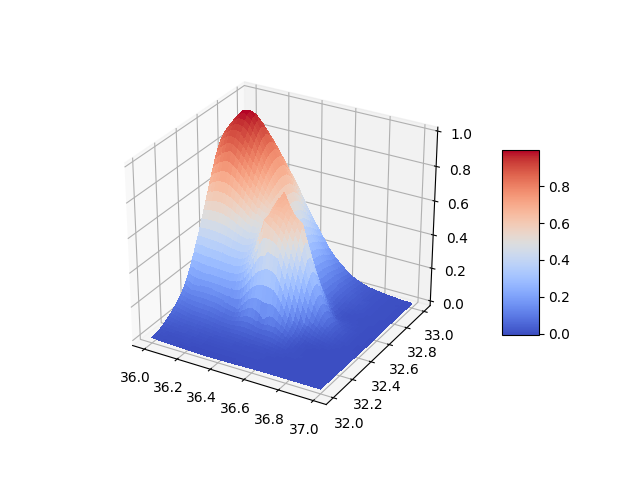

Ara değerlemek (interpolation), yani elde olan veriyi kullanıp olmayan hakkında tahmin yapmaya uğraşmak için çok boyutlu ortamda RBF iyi işleyen bir yaklaşım. Belki de zihinde en rahat canlandırılabilecek örnek yeryüzünde dağlara ovalara tekabül eden yükseklik (elevation) verilerini alarak onlara sürekli tepe fonksiyonları "uydurmak" böylece dağların nerede olduğunu sürekli şekilde saptamak. Temsil etmek istediğimiz (ama bilmediğimiz) fonksiyon $z=g(x,y)$ olarak gösterilebilecek bir fonksiyon, bir düzlemde herhangi bir $x,y$ noktasındaki yükseklik $z$. Bu fonksiyondan örneklenerek alınmış verilerle onu yaklaşık olarak temsil etmek istiyoruz.
Düz verinin kendisini kullanmak bağlamında düşük çözünürlükte yükseklik verisi ise yaramayabilir, mesela bir örneklem noktası dağın bir eteğinden diğeri öteki yanındaki eteğinden alınmışsa bu dağ yok anlamına gelecektir. Peki o zaman niye yükseklik verisinın geldiği yerden daha yüksek çözünürlüklü veri almıyoruz? Bu hem erişim hem de tutacağı yer bağlamında pahalı olabilir. 1 derecelik enlem / boylam içinde, mesela 36-37 ve 32-33 arası diyelim, 100 metrelik çözünürlük demek 0.001 derece değişimine tekabül eder, ve bu durumda 1 milyon veri noktası alınması gerekecektir. Halbuki yükseklik verisinden yüzde 3 miktarında bile [2] bir rasgele örneklem alırsak, bu noktalara RBF ile tepe fonksiyonları uydurarak matematiksel, sürekli olan bir genel fonksiyon elde ederiz, ve uydurma iyi işlerse artık istediğimiz çözünürlükte yükseklik verisi elde edebiliriz çünkü elimizdeki sürekli fonksiyona istediğimiz her nokta için yükseliğin ne olduğunu artık hesaplattırabiliriz.
Bu örneği 3 boyutta herhangi bir başka veri için de düşünmek mümkün; ama yükseklik verisinde daha rahat, her örneklem noktasına konulan tepeler ve onların birleşimi bize pürüzsüz, sürekli bir engebe şekli verir. RBF baz fonksiyonları $\Phi(x) = f(||x-c||)$ şeklindedir, $f$ tepe, ya da farklı bir fonksiyon olabilir, $||\cdot||$ norm fonksiyonudur, Öklitsel norm olabilir mesela.
Burada $c$ üstüne baz fonksiyon konulan nokta, her örneklem veri noktası yani. RBF eğitimi / uydurma metadolijisine göre herhangi bir veri noktası dışındaki tüm diğer örneklem verileri o veri noktasının oluşumunu etkiler. Bu anormal bir faraziye değil, bir dağın başında, ortasında, tepesinden alınmış örneklemler varsa, mesela en alt ve en tepedeki veri ortadakini etkiler, yani o bağlantıyı, ilişkiyi farzetmek normaldir. Orta nokta zirveyi tanımlayan fonksiyona belli bir ağırlıkla bağlı, en alttakine başka bir şekilde bağlı, vs. Bu ağırlıkların ne olacağını genel çözüm belirleyecektir. Eğer $f$ için Gaussianımsı bir tepe fonksiyonu seçersek, yeni gözlemin baz fonksiyonları ile arasındaki ilişki,
$$ h(x) = \sum_{n=1}^N w_n \times exp(-\gamma \|x-x_n\|^2) $$
olarak gösterilebilir, $\gamma$ her noktanın etkisinin ne olduğunu dışarıdan ayarlamak için genel bir sabit, ne kadar küçükse konulan tepe o kadar kenarlara yayılır, daha büyük değerler daha noktasal olur.
İki üstteki formüldeki $x-c$ kullanımına dikkat, bu aslında "diğer noktaları" temsil etmenin akıllıca bir yolu, $c$ üzerinde $x-c$ sıfır değerdedir, bu o noktayı temsil için diğer noktalar üzerindeki bazların devreye girmesi gerektiğini modelde söyler.
Her bazın etkisi $w_n$ ağırlığı üzerinden modele yansıtılır. Bu ağırlıkların ne olduğunu bulmak, nihai genel fonksiyonu bulmuş olmak anlamına gelir. Farklı indislerle tekrar belirtmek gerekirse her veri noktası için şu doğru olmalı,
$$ y_n = \sum_{n=1}^N w_m \times exp(-\gamma \|x_n-x_m\|^2) $$
Bu bize $N$ tane veri noktası için $N$ tane denklem ve $N$ tane bilinmeyen sağlar. Üstteki formülü matris formunda gösterebiliriz,
$$ \underbrace{ \left[\begin{array}{rrr} \exp(-\gamma \|x_1-x_1\|^2) & \cdots & \exp(-\gamma \|x_1-x_N\|^2)\\ \exp(-\gamma \|x_2-x_1\|^2) & \cdots & \exp(-\gamma \|x_2-x_N\|^2)\\ \vdots & \ddots & \vdots \\ \exp(-\gamma \|x_N-x_1\|^2) & \cdots & \exp(-\gamma \|x_N-x_N\|^2) \end{array}\right] }_{\Phi} \underbrace{ \left[\begin{array}{r} w_1 \\ w_2 \\ \vdots \\ w_N \end{array}\right]}_{w} = \underbrace{ \left[\begin{array}{rrr} y_1 \\ y_2 \\ \vdots \\ y_N \end{array}\right]}_{y} $$
Bu durumda $w = \Phi^{-1}y$ bize $w$ ağırlıklarını, yani nihai çözümü verecektir.
Bir örnek üzerinde görelim,
from mpl_toolkits.mplot3d import Axes3D
import matplotlib.pyplot as plt
from matplotlib import cm
import numpy as np
import matplotlib.pyplot as plt
import numpy.linalg as lin
from scipy.spatial.distance import cdist
Şimdi direk bilinen iki RBF kullanalım, böylece her şeyin nasıl biraraya geldiği ileride daha iyi anlaşılır. Bizim tanımladığımız ağırlıklar, ve iki RBF ile şu şekilde bir grafik oluşturabilirdik,
D = 50
gamma = 2.0
x = np.linspace(36,37,D)
y = np.linspace(32,33,D)
xx,yy = np.meshgrid(x,y)
xm = np.array([[36.06122449],
[36.71428571]])
ym = np.array([[32.67346939],
[32.32653061]])
X = np.hstack((xm,ym))
Phi = np.exp(-gamma*cdist(X,X,metric='euclid'))
w = np.array([[0.5],[0.5]])
xxx = xx.reshape(D*D)
yyy = yy.reshape(D*D)
a = np.vstack((xxx,yyy))
d = cdist(X,a.T)
d = np.exp(-gamma * d)
dd = np.dot(w.T,d)
znew = dd.reshape(D,D)
fig = plt.figure()
ax = fig.gca(projection='3d')
surf = ax.plot_surface(xx, yy, znew, cmap=cm.coolwarm,linewidth=0, antialiased=False)
plt.savefig('linear_app88rbf_04.png')
Bu kod üzerinde oynayarak farklı $\gamma$, ağırlıklar $w$ değerlerinin grafikte değişime yol açtığı görülebilir.
Burada RBF ile aslında analitik bir fonksiyon yaratmış olduk. Bir kez ağırlıklarını aldıktan sonra (RBF merkezlerini zaten biliyoruz) herhangi bir $x,y$ değeri için o noktadaki birleşik RBF sonucunu hesaplatabiliriz, mesela üstteki fonksiyon için
$$ x_{m1} = [36.06, 32.67], x_{m2} = [36.71, 32.32], x_{test} = [36.16, 32.77] $$
$$ y = 0.5 \exp (-\gamma || x_{test} - x_{m1} ||^2) + 0.5 \exp (-\gamma || x_{test} - x_{m2} ||^2 ) $$
x_test = [36.16, 32.77]
w1 = 0.5; w2 = 0.5
d1 = (x_test[0]-xm[0])**2 + (x_test[1]-ym[0])**2
d2 = (x_test[0]-xm[1])**2 + (x_test[1]-ym[1])**2
y_new = w1*np.exp(-gamma * d1) + w2*np.exp(-gamma * d2)
print (y_new)
[0.6637959]
Gerçek dünya şartlarına yaklaşırsak; bu tür durumlarda çok daha fazla baz
fonksiyon, örneklem kullanılır, altta func fonksiyonu örneklem
üretmek için kullanılacak, normal şartlarda bu fonksiyonu bilmiyoruz,
sadece ondan gelen örneklem verilerini biliyoruz. Bir örnek amaçlı, belli
bir şekli zorlamak için bunu yaptık.
np.random.seed(0)
def func(x, y):
s1 = 0.2; x1 = 36.5; y1 = 32.5
s2 = 0.4; x2 = 36.1; y2 = 32.8
g1 = np.exp( -4 *np.log(2) * ((x-x1)**2+(y-y1)**2) / s1**2)
g2 = np.exp( -2 *np.log(2) * ((x-x2)**2+(y-y2)**2) / s2**2)
return g1 + g2
D = 50
S = 100
gamma = 2.0
x = np.linspace(36,37,D)
y = np.linspace(32,33,D)
xx,yy = np.meshgrid(x,y)
zz = func(xx,yy)
fig = plt.figure()
ax = fig.gca(projection='3d')
surf = ax.plot_surface(xx, yy, zz, cmap=cm.coolwarm,linewidth=0, antialiased=False)
plt.savefig('linear_app88rbf_01.png')

İki tane tepe var. Şimdi bu fonksiyondan rasgele örneklem alalım, ve $\Phi$ üzerinden RBF ağırlıklarını hesaplayalım,
xxx = xx.reshape(D*D)
yyy = yy.reshape(D*D)
zzz = zz.reshape(D*D)
idx = np.random.choice(range(D*D),S)
xr = xxx[idx].reshape(S,1)
yr = yyy[idx].reshape(S,1)
zr = zzz[idx].reshape(S,1)
X = np.hstack((xr,yr))
Phi = np.exp(-gamma*cdist(X,X,metric='euclid'))
w = np.dot(lin.pinv(Phi),zr)
Ağırlıklarla fonksiyonu tekrar yaratmaya uğraşalım,
a = np.vstack((xxx,yyy))
d = cdist(X,a.T)
d = np.exp(-gamma * d)
dd = np.dot(w.T,d)
znew = dd.reshape(D,D)
fig = plt.figure()
ax = fig.gca(projection='3d')
surf = ax.plot_surface(xx, yy, znew, cmap=cm.coolwarm,linewidth=0, antialiased=False)
plt.savefig('linear_app88rbf_02.png')

Pek optimizasyon yapmadık, ama orijinale benzidiği söylenebilir.
Not: cdist bir veri matrisindeki her satır ile her diğer satır arasında
(tüm kombinasyonlar) mesafe hesabı yapar.
Yeni tek bir veri noktası için
xnew = np.array([[36.5,32.5]])
print (np.multiply(w.T,np.exp(-gamma*lin.norm(X-xnew,axis=1))).sum())
0.6423871447150892
Bu yaklaşımı tüm dünyanın yeryüzü dağ, tepe veri tabanını oluşturmak için kullanabiliriz. 1 milyon veri yerine onun yüzden 3'u üzerinden RBF işlettikten sonra $x,y,w$ değerlerini tutarız, gerisini atarız. Bu üç değer geniş bir bölgeyi pürüzsüz fonksiyonlarla yaklaşık temsil etmenin en iyi yolu. Veri tabanı sadece bu değerleri taşıyacak.
Bizim bu konuya girmemizin sebebi Google Elevation API ile aldığımız yükseklik verilerini verimli şekilde kullanma ihtiyacı idi.
Simdi scipy ile ayni isleri yapalim,
np.random.seed(0)
S = 200
x = np.linspace(36,37,D)
y = np.linspace(32,33,D)
xx,yy = np.meshgrid(x,y)
znew = func(xx,yy)
xx = xx.reshape(D*D)
yy = yy.reshape(D*D)
znew = znew.reshape(D*D)
from scipy.interpolate import Rbf
rbfi = Rbf(xx,yy,znew,function='gaussian')
znew = rbfi(xx,yy)
xx = xx.reshape(D,D)
yy = yy.reshape(D,D)
znew = znew.reshape(D,D)
fig = plt.figure()
ax = fig.gca(projection='3d')
surf = ax.plot_surface(xx, yy, znew, cmap=cm.coolwarm,linewidth=0, antialiased=False)
plt.savefig('linear_app88rbf_05.png')

Not: scipy ile bize döndürülen ve ara değerleme için direk
çağırılabilen objeyi gerekli her türlü bilgiyi içinde taşıyor. Yani modeli
çıkartıp veriyi atıp, sadece bu objeyi (mesela pickle ile) diskte
saklayabiliriz, bu tek başına yeterlidir.
Modelleme scipy İle, Tekrar Yaratmak Elle Yazılan Fonksiyon İle
Bir diğer yaklaşım veriyi örneklemek, scipy ile RBF'leri yaratmak,
ama sciy parametrelerini kullanarak modeli kendimizin tekrar
yaratması. Bunun değişik sebepleri olabilir, belki veriyi modelleyen bir
yükseklik fonksiyonu üzerinde otomatik türev almak istiyoruz, ama
scipy içindeki versiyon ile bunu yapamıyoruz. Ya da motor kapağı
altında nelerin olup bittiğini daha iyi anlamak istiyoruz.
Her neyse, yine iki tepeli ortamı yaratıyoruz,
from mpl_toolkits.mplot3d import Axes3D
import matplotlib.pyplot as plt
from matplotlib import cm
np.random.seed(0)
def func(x, y):
s1 = 0.2; x1 = 36.5; y1 = 32.5
s2 = 0.4; x2 = 36.1; y2 = 32.8
g1 = np.exp( -4 *np.log(2) * ((x-x1)**2+(y-y1)**2) / s1**2)
g2 = np.exp( -2 *np.log(2) * ((x-x2)**2+(y-y2)**2) / s2**2)
return g1 + g2
D = 100
x = np.linspace(36,37,D)
y = np.linspace(32,33,D)
xx,yy = np.meshgrid(x,y)
zz = func(xx,yy)
Ve grafiklemeyi yapıyoruz,
xx = xx.reshape(D,D)
yy = yy.reshape(D,D)
zz = func(xx,yy)
fig = plt.figure()
ax = fig.gca(projection='3d')
ax.view_init(elev=29, azim=29)
surf = ax.plot_surface(xx, yy, zz, cmap=cm.coolwarm,linewidth=0, antialiased=False)
plt.savefig('linear_app88rbf_03.png')
Şimdi örneklem alıp RBF yaratalım,
from scipy.interpolate import Rbf
S = 50
np.random.seed(0)
idx = np.random.choice(range(D*D),S)
xr = xx.reshape(D*D)[idx].reshape(S,1)
yr = yy.reshape(D*D)[idx].reshape(S,1)
zr = zz.reshape(D*D)[idx].reshape(S,1)
rbfi = Rbf(xr,yr,zr,function='gaussian',epsilon=0.15)
Modelleme Gaussian RBF'ler üzerinden yapıldı, bu formül neye benziyor? Dokümantasyona bakınca
'gaussian': exp(-(r/self.epsilon)**2)
ifadesini görüyoruz, burada r yeni nokta ile bir RBF baz fonksiyonu
arasındaki mesafe. Bir test noktası ile üstteki RBF'leri (D*D tane)
arasındaki mesafe şöyle hesaplanabilir,
def dist_matrix(X, Y):
sx = np.sum(X**2, 1)
sy = np.sum(Y**2, 1)
D2 = sx[:, np.newaxis] - 2.0*X.dot(Y.T) + sy[np.newaxis, :]
D2[D2 < 0] = 0
D = np.sqrt(D2)
return D
test_1 = np.array([[36.0,32.0]])
test_1_dist = dist_matrix(test_1, rbfi.xi.T)
print (test_1_dist.shape)
print (test_1_dist[0][:10])
(1, 50)
[0.4229176 1.08927112 0.72276945 0.76827462 0.96299239 1.21064725
0.85578867 0.94970984 0.80965755 0.76794254]
O mesafeyi alıp eksi karesini hesaplayıp exp'ye vermek lazım. Tüm
RBF'leri de bir şekilde dahil etmek lazım tabii, o da hesaplanan ağırlıklar
ile üstteki sonucu çarpıp hepsini toplamakla olur. Gerekli parametreler
rbfi içinde,
print (rbfi.epsilon)
print (rbfi.smooth)
print (rbfi.xi.shape)
print (rbfi.nodes.shape)
0.15
0.0
(2, 50)
(50,)
Ağırlıklar nodes, RBF merkezleri xi, epsilon genel bir
pürüz parametresi. İki test noktası üzerinde görelim, dikkat burada {\em
tüm} RBF'ler gözönüne alınacak,
nodes = rbfi.nodes.reshape(1,len(rbfi.nodes))
def gaussian(r,eps): return np.exp(-(r/eps)**2)
def f_interp(newp, rbfi):
nodes = rbfi.nodes.reshape(1,len(rbfi.nodes))
newp_dist = dist_matrix(newp, rbfi.xi.T)
return np.dot(gaussian(newp_dist, rbfi.epsilon), nodes.T)
test_2 = np.array([[36.0,32.0],[36.1,31.9]])
print (f_interp(test_2,rbfi))
[[-0.00387063]
[-0.00337065]]
Şimdi iki tepeli fonksiyonu RBF'ler üzerinde yaratalım,
test_3 = np.column_stack((xx.ravel(), yy.ravel()))
znewnew = f_interp(test_3,rbfi).reshape(xx.shape)
fig = plt.figure()
ax = fig.gca(projection='3d')
ax.view_init(elev=29, azim=29)
surf = ax.plot_surface(xx, yy, znewnew, cmap=cm.coolwarm,linewidth=0, antialiased=False)
plt.savefig('linear_app88rbf_06.png')

RBF Türev ve Hessian Matrisi
Ana formülü hatırlayalım,
$$ f(x) = \sum _{i=1}^{m} \beta_i \phi(|| x-x_i||) $$
ki $\beta_1,...,\beta_m$ oyle seciliyor ki
$$ f(x_i) = F(x_i), \quad i=1,2,...,m $$
eşitliği tatmin edilsin, burada $F$ modellenen ana fonksiyondur, ve $\phi$ bizim seçtiğimiz baz fonksiyondur. RBF'in turevi nedir? Analitik olarak hesaplayabiliriz,
$$ \frac{\partial f(x)}{\partial x} = \beta^T \frac{\partial g}{\partial x} = \sum_{i=1}^{m} \beta_i \phi'(r_i) \frac{\partial r_i}{\partial x} $$
öyle ki $\phi'(r) = \mathrm{d} \phi / \mathrm{d} r$, ve
$$ r_i(x) = ||x-x_i|| = \sqrt{(x-x_i)^T(x-x_i)} \qquad (1) $$
Ayrıca
$$ \frac{\partial r_i}{\partial x} = \frac{1}{r_i(x)} (x-x_i)^T $$
Hepsi bir arada [4]
$$ \frac{\partial f(x)}{\partial x} = \sum_{i=1}^{m} \frac{\beta_i\phi'(r_i)}{r_i(x)} (x-x_i)^T $$
Hessian'ini alttaki gibi hesaplayabiliriz [3]. [4]'teki formul
$$ \frac{\partial^2 f(x)}{\partial x^2} = \sum_{i=1}^{m} \bigg\{ \phi'(r_i) I + \bigg[\phi"(r_i) - \frac{\phi'(r_i)}{r_i(x)} \bigg] (x-x_i) \frac{\partial r_i}{\partial x} \bigg\} \qquad (2) $$